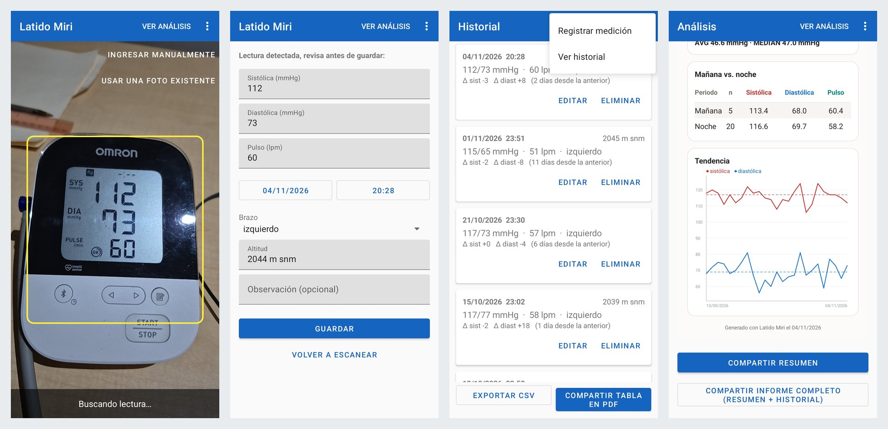
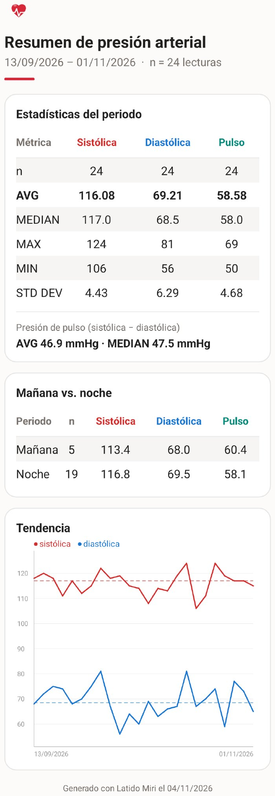
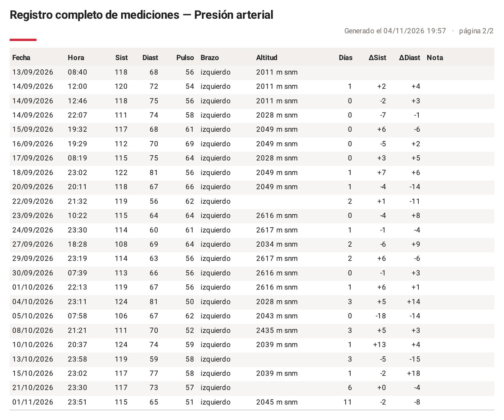

Latido Miri: blood pressure tracker
I needed reliable readings so my doctor could assess my blood pressure with data, not a single reading in the office. I was logging every measurement by hand in a spreadsheet: repetitive, error-prone and slow.
In 2024 I tried to build an app that reads the monitor's digital display and could not get reliable digit recognition.
In 2026 I rebuilt it with Claude. I wrote the specification: read the result, store each measurement, analyze trends. Digit recognition was still unreliable, so at the seventh iteration I proposed a small neural network trained only on seven-segment digits. Then I saw it wasn't needed and directed the iterations that worked instead: a different approach, an on-screen guide frame to line up the monitor, a reference mark on the display, and brightness adjustment.
Point the camera at the monitor; the app reads the display and shows the values for review before saving, with date, time, arm and altitude filled in. Every reading goes to a history with the change from the previous one. Manual entry and existing photos also work, and the data exports to CSV or PDF.

The app replaced the manual log. It calculates the statistics and draws the charts itself, so there are no spreadsheet ranges to check. A one-page report, shared in one tap, shows the overall picture in under a minute: averages, morning versus night, and the trend. An optional full log adds every reading with time, arm and altitude, so the averages can be traced back to real measurements. No names appear on the report. My doctor reviewed it and used it for her assessment.


Real report from 24 readings, shown as generated by the app.
Native Android app in Java. View the code on GitHub (the core recognition module is private). Live demo available in an interview.